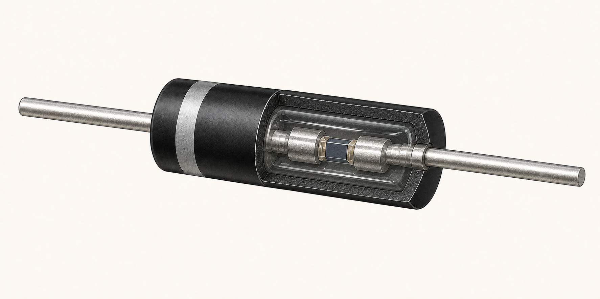

Thermal equilibrium
Predict the junction before solving
1D structure
P-type silicon | N-type silicon
Before solving, predict the direction of the built-in field and which side has the wider depletion region.

Representative construction
Inside an axial silicon diode
Glass-passivated brazed DO-41 construction. The die is enlarged for visibility; doping is not optically visible.
- 1Cathode band
- 2Epoxy molding
- 3Plated copper lead
- 4Molybdenum slug
- 5Silicon die
- 6Brazed contacts
- 7Glass passivation
What the solver keeps: a one-dimensional path through the silicon across the PN junction. The package is omitted and its metal connections become ideal ohmic boundaries.
Physical component 1D semiconductor model
Anode
PNA = 10¹⁶ cm⁻³
estimated depletion
NND = 10¹⁶ cm⁻³
Cathode
Valid configuration. Open “Solve” to calculate the physical state.
Calculating the I–V characteristic
The operating point is followed by 67 self-consistent states from −1.00 to 0.65 V.